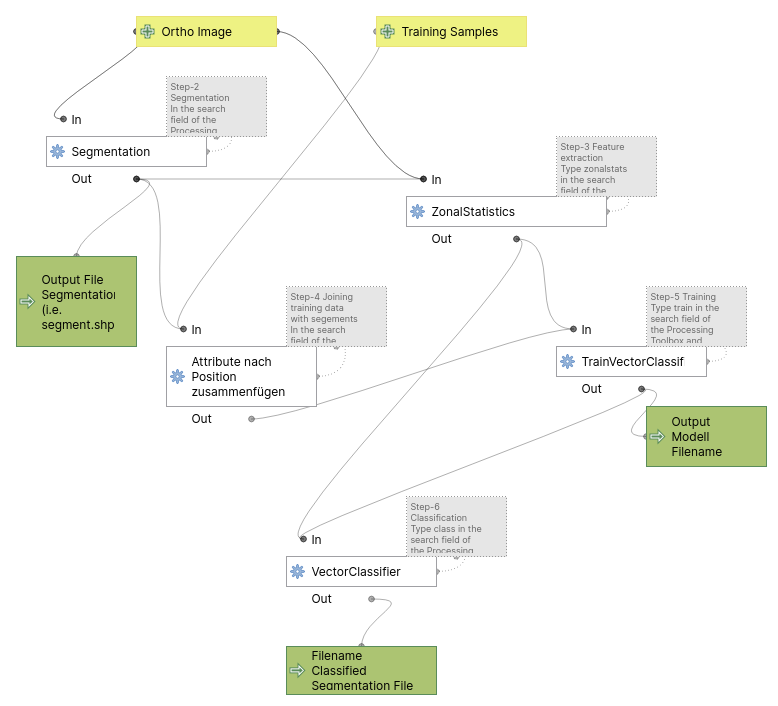

Object-based image analysis (OBIA)
Human visual perception almost always outperforms computer image processing algorithms, For example, your brain knows a river when it sees one. But a computer can’t distinguish rivers from lakes, roads or sewage treatment plants.
Especially with the spatially extreme and spectrally minimal resolution UAV image data, a change in thinking must take place. It makes more sense to think in terms of objects or entities to be identified rather than classifying in terms of individual pixels. The basic principle of object-based image analysis (OBIA) is to segment first and then classify.
The segmentation process is algorithm-dependent but looks iteratively for similarities in space, structure and channel dimensions for grouping neighboring and similar pixels into objects. This segments are classified in a next step using supervised training data.
General Workflow
The example of OBIA classification is typical of the manual performance of such operations using a software package. It consists of the following steps:
- data acquisition (orthophoto, training data).
- generation of spatial segments on the basis of the
- extraction of suitable description parameters
- model training
- classification of the input data set.
In software-based processing, additional steps often have to be performed for technical reasons. Even more often, the processing of the individual steps is not necessarily linear, since intermediate results are used repeatedly in different steps. The following figure shows below step by step described process as a graphical model, which you can integrate in QGIS as a tool in the Processing Box.

OBIA classification Workflow for Orthoimages
For reference you may Download the basic data. In Addition you may download the upper OBIA-workflow as an QGIS-Model. You can add this to your QGIS project with pushing the first icon “Models” on the processing sidebar and choose Add Model to Toolbox. Please note that is running with fixed default values. For modifying it you need to right-click on the model and choose Edit Model.
Step by step tutorial
In the following step by step guide an OBIA approach with QGIS and the OTB Toolbox is carried out as an template example. There are many segmentation algorithms and integrated classification methods. The Mean-shift method used here and the subsequent training with Support Vector Machine is a robust and common method. Especially the extension of the feature space (here called Range Radius) and the search space (Spatial Radius) as well as the size of the segmented objects (Minimum Region size) is crucial for a satisfying result. The principle is transferable to the different forms of the OBIA and despite abundant literature and some good instructions it is a free empirical game.
Step-1 Create Training Sample Points by manual digitizing
If you need to learn how to digitize with QGIS you may follow this tutorial. However we will only digitize Points and not polygons.
Main Menu->Settings->Digitize and check Reuse last entered attribute values. this will makes in much more comfortable to digitize training points of one class in series.
Create a point vector file and digitize the following classes:
| class | CLASS_ID |
|---|---|
| water | 1 |
| meadows | 2 |
| meadows-rich | 3 |
| bare-soil-dry | 4 |
| crop | 5 |
| green-trees-shrubs | 6 |
| dead-wood | 7 |
| other | 8 |
Provide at minimum 10 widely spread sampling points.
Save this file naming it sample.gpgk.
Here, the training data is digitized on the screen (as is often the case) using the god’s eye method as an example. For a rough classification of the selected classes, this is of course useful and sufficiently accurate.
However, please keep in mind that these training samples are usually collected in the field. This means that utilizing a GPS or exact map work, the positions, and their affiliations are collected and entered into a corresponding table. Often this is accompanied by a vegetation survey, soil survey, or limnological or other surveys.
Step-2 Segmentation
In the search field of the Processing Toolbox type segmentation and double click Segmentation.
- select the
input image: example-5.tif - select
meanshiftfrom the drop-down list Segmentation algorithm - The
Spatial Radiusvalue can be set to 25. This is determining the spatial range of the segementation and is also experimental. Try to identify the scale of your major classes in pixel - The
Range Radiusvalue can be set to 25. We are dealing with RGB images that have a range0-255. The optimal value depends on the datatype, the dynamic range of the input image and requires experimental trials for the specific classification objectives - Set
Minimum Region sizein pixels to 25. The minimum size of a region (in pixel unit) in segmentation. Smaller clusters will merged to the neighboring cluster with the closest radiometry - keep
Processing modeas Vector - Tick
8-neighborhood connectivity - Set
Minimum object sizein pixels to 200 - Name the
Output vector fileas segments-meanshift.shp - Push
Run
{kind=link}
- Check the results: Load the output vector file segments-meanshift.shp into your QGIS session and place it on top of the image example-5.tif
- Colorize the vector layer in the QGIS Layers window. Right click
Properties->Symbology->Simple Fill,Fill Style:No BrushandStroke color:white. - Check the features with a visual inspection. Is the result goal keeping? If not, start over… .
Step-3 Feature extraction
Type zonalstats in the search field of the Processing Toolbox and open the tool ZonalStatistics. You find it under the image manipulation section of OTB.
- Select as input image: example-5.tif.
- Select
input vector datathe vector file with segments from above segmentation segments-meanshift.shp - Name for the
output vector: segments-meanshift-zonal.shp. - Push
Run.
{kind=link}
Step-4 Joining training data with segements
Type in the search field of the Processing Toolbox join and double click Join Attributes by Location.
- select the
Base Layer: segments-meanshift-zonal.shp - select the
Join Layer: sample.shp Join Type: choose Take Attributes of the first matching…- Tick
Discard records which could not be joined - Provide an output filename

fix in the search field of the Processing Toolbox and open Fix Geometries which will in most cases do the job.
Step-5 Training
Type train in the search field of the Processing Toolbox and open TrainVectorClassifier
- In the field
Vector Data Listselect the correct vector file by clicking … and browse directly to the file containing the training area polygons segments-meanshift-zonal.shp - Provide the
Output model filenameas lahn-gi-spann-obia.model - In the field
Field names for training featurescopy and paste"mean_0 stdev_0 mean_1 stdev_1 mean_3 stdev_3 mean_2 stdev_2" - The name of
Field containing the class id for supervisionisCLASS_ID - Classifier to use for training:
libsvmUsually the straighforward Support Vector Machine is doing a good job - SVM Kernel Type:
linear - SVM Model Type:
csvc - Set
Parameters optimizationtoON - Push
Run

Step-6 Classification
Type class in the search field of the Processing Toolbox and open VectorClassifier
- In the field
Vector Dataselect manually the correct vector file clicking … and browse directly to the file containing the training area polygons containing segments and features for the whole image lahn-gi-spann-segments-meanshift-zonal.shp - The name of the upper
input modelfile is lahn-gi-spann-obia.model - Output field containing the class is
CLASS_ID - Copy and paste into the field
Field names to be calculatedsame attributes as above:"mean_0 stdev_0 mean_1 stdev_1 mean_3 stdev_3 mean_2 stdev_2" - Name the
output vectordata lahn-gi-spann-classified_obia.shp. - Push
Run - Finally load the output vector file into QGIS and apply the same QGIS style used for the training data.
Layer->Layer properties->Symbology->Style->Load style....


Result
You will see partly predominantly excellent classification. However, there are also significant misclassifications.
- What could be the reason for that?
- What is a weakness of this approach?
- Any suggestion to improve?